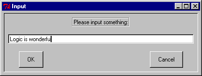

atomic_input_dialog/[2,3,4] — input atoms and numbers
atomic_input_dialog(Msg, Input)
atomic_input_dialog(Msg, Title, Input)
atomic_input_dialog(Interp, Msg, Title, Input)These predicates present the user with popup dialogs requesting input of text(as atoms) or numbers. The shorter versions are defined by :
atomic_input_dialog(Msg, Input)
:-
atomic_input_dialog(Msg, 'Input', Input) .
atomic_input_dialog(Msg, Title, Input)
:-
atomic_input_dialog(tcli, Msg, Title, Input) .For the general call
atomic_input_dialog(Interp, Msg, Title, Input),Interp, Msg, and Title should all be atoms, while Input should be an uninstantiated variable.
The call
?- atomic_input_dialog('Please input something:', Input).will popup the following window :

If the user types
Logic is wonderfulthen the result would be
Atom = Logic is wonderful